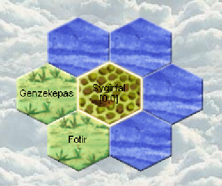

Aquarian: Runde 1
Turn 1
Location Discovery:
Region name is Sygirfal, 2 swamps around and 4 oceans. We will be able to send boats in 4 directions!

Starting on a wooded plain, surrounded by 2 swamps and the ocean.
Resources: 500 wood, 100 saplings, 51 horses, 4004 peasants.
General starting allocation: 2500 silvers, 4 stones, 10 wood.
Aquarian starting allocation: 1 boat, 1 captain.
Classic start, but with lots of horses (that's very good).
With our recruitments, the max trade will decrease from next week in this region.
The horses will be useful for trade, transport and island exploration.
The 2 nearby regions are swamps, it's not great but could be worse. We'll need to settle there in the future at least for the first trade.
Recruitment
- Recruit our 5 mages (COMBAT status Defensive)
- Recruit 1 unit with perception, who will learn perception EVERY turn
- Recruit our Shipcraft (more is useless at the start)
- Recruit our 2nd captain
- Recruit our entertainers (COMBAT status Aggressive, they must protect the mages)
- Recruit our assistant pilot (entertain)
- Recruit our assistant for the future pilot (entertain) (COMBAT NOT)
- Send the first boat away. (COMBAT NOT)
First Turn Specifics:
Name (or renumber) your Faction. This is important especially for your neighbors. An unnamed faction is quickly considered suspicious or unfriendly. How do you address the player of the "Faction uv9t" tribe?
Name all your units, or even describe them.
Name your buildings, here the boat, it's more pleasant!
Warning!
The first unit is in the boat. Any unit recruited by it will be in the boat. So all units recruited this turn, except the assistant pilot must leave the boat! Otherwise your boat will be "overloaded" and won't be able to sail. You must also give all equipment or the boat will be overloaded.
Recruit the 5 mages even if it's an investment, because each mage costs 80+100+10=190 silvers. Each level 1 mage can cast a spell to earn 50 silvers. So if all goes well a mage pays for itself very quickly. A mage can have failures but the risk is worth it, especially since the entertainers will ensure survival in case of problems.
Recruit a perception unit to avoid being an easy target for thieves.
Only one Shipcrafter recruited because you can't enter an unbuilt boat. So building a boat in 1 turn is useless at the start because we lack resources.
It's better to send a boat with 2 units: 1 captain and one entertainer. As an Aquarian if you don't make long orders you can Work at sea, so cost nothing. However upon landing you can bring back money (except guarded areas). You can also swim to the coast for first contact.
Don't forget to give money to the boat captain! Here I give a lot (everything that's left).
I also create a special group for navigators so they won't be starved by feeding foreign passengers.
Navigation Technique and Choices:
Coastal sailing or open sea direction. This is a choice to make according to the apparent configuration of the island.
Here we are at the end of an island. We can easily coast to explore the island and meet its inhabitants. On the other hand, coastal sailing is long and tedious, and allows discovering fewer areas.
So I would opt for a first open sea departure and coastal sailing with the second boat.
A boat cannot go directly from mainland to mainland. So to minimize risks during coastal sailing, go offshore even if it's a bit longer